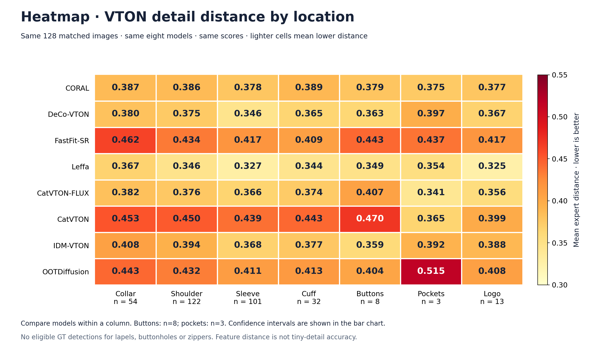
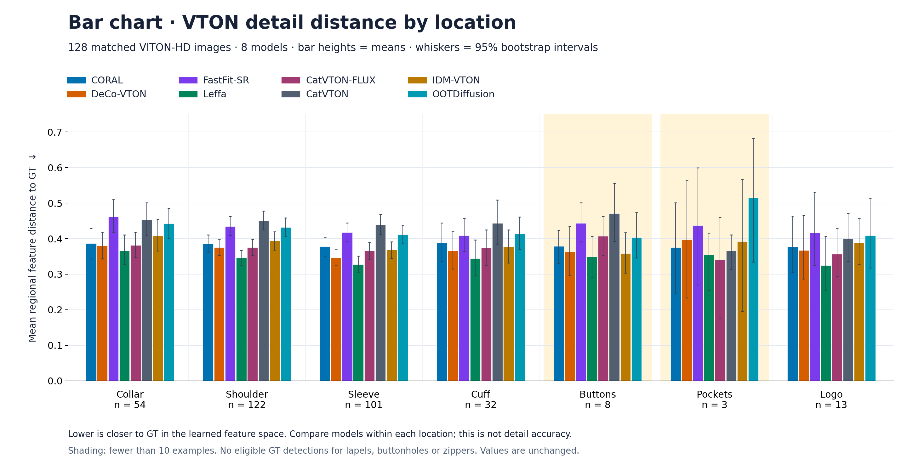
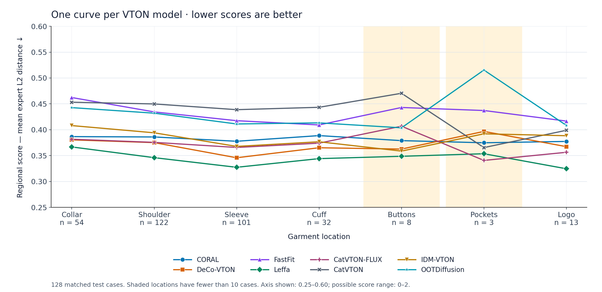
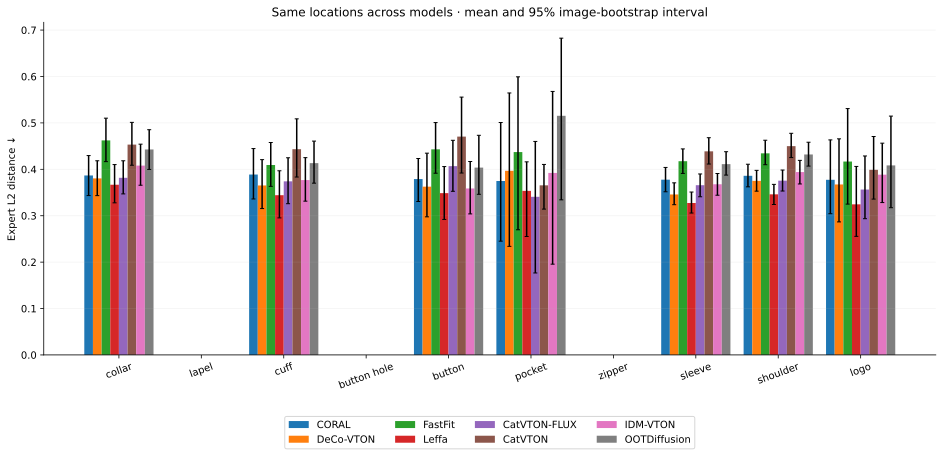

VTON scores by garment location
8 models · 128 matched VITON-HD cases · 1,024 generated images
New: HR-VITON explicit-warping test — nine-model graphs and flatlay → warp → final image. The original comparison below is preserved.
X: garment location Y: regional distance score, lower is better Each color: one VTON model
Heatmap PNG · Bar chart PNG · Original line chart PNG · All graphs and GT/model images directly on GitHub


Heatmap

Bar chart

Original line chart

Exact scores, sample counts and confidence intervals
| Model | Collar n = 54 | Shoulder n = 122 | Sleeve n = 101 | Cuff n = 32 | Buttons n = 8 | Pockets n = 3 | Logo n = 13 |
|---|---|---|---|---|---|---|---|
| CORAL | 0.387 0.343–0.430 | 0.386 0.362–0.411 | 0.378 0.352–0.404 | 0.389 0.336–0.445 | 0.379 0.331–0.423 | 0.375 0.245–0.501 | 0.377 0.304–0.463 |
| DeCo-VTON | 0.380 0.343–0.418 | 0.375 0.353–0.398 | 0.346 0.324–0.371 | 0.365 0.315–0.421 | 0.363 0.298–0.435 | 0.397 0.234–0.565 | 0.367 0.287–0.466 |
| FastFit | 0.462 0.417–0.510 | 0.434 0.410–0.463 | 0.417 0.391–0.444 | 0.409 0.363–0.458 | 0.443 0.392–0.501 | 0.437 0.270–0.599 | 0.417 0.325–0.531 |
| Leffa | 0.367 0.328–0.410 | 0.346 0.324–0.368 | 0.327 0.306–0.351 | 0.344 0.295–0.397 | 0.349 0.292–0.406 | 0.354 0.255–0.416 | 0.325 0.256–0.406 |
| CatVTON-FLUX | 0.382 0.347–0.418 | 0.376 0.353–0.398 | 0.366 0.341–0.390 | 0.374 0.326–0.425 | 0.407 0.353–0.463 | 0.341 0.177–0.460 | 0.356 0.293–0.429 |
| CatVTON | 0.453 0.409–0.501 | 0.450 0.425–0.478 | 0.439 0.411–0.468 | 0.443 0.383–0.509 | 0.470 0.392–0.556 | 0.365 0.314–0.410 | 0.399 0.336–0.471 |
| IDM-VTON | 0.408 0.366–0.454 | 0.394 0.368–0.419 | 0.368 0.344–0.391 | 0.377 0.331–0.425 | 0.359 0.304–0.417 | 0.392 0.196–0.568 | 0.388 0.328–0.456 |
| OOTDiffusion | 0.443 0.400–0.485 | 0.432 0.407–0.458 | 0.411 0.388–0.438 | 0.413 0.370–0.461 | 0.404 0.346–0.473 | 0.515 0.334–0.683 | 0.408 0.317–0.515 |
All 95% confidence intervals
